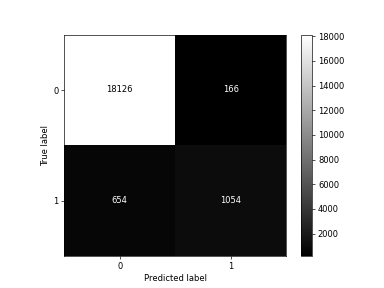

Descripción del dataset
El dataset utilizado para entrenar el modelo de regresión logística contiene información clínica y demográfica de pacientes. Incluye variables como edad, género, presencia de hipertensión y enfermedades cardíacas, índice de masa corporal (BMI), nivel de hemoglobina (HbA1c), nivel de glucosa en sangre y antecedentes de tabaquismo. La columna objetivo diabetes indica si el paciente tiene o no diabetes (0: No, 1: Sí).
Evaluación del modelo
{{exactitud}}
| Clase | Precision | Recall | F1-Score | Support |
|---|---|---|---|---|
| {{ clase }} | {{ "%.2f"|format(valores.get("precision", "")) }} | {{ "%.2f"|format(valores.get("recall", "")) }} | {{ "%.2f"|format(valores.get("f1-score", "")) }} | {{ valores.get("support", "")|int }} |
| {{ clase }} | {{ "%.2f"|format(valores) }} | |||
Matriz de confusión:
Predicción: ¿Tiene diabetes?
{% if resultado != 0 %}Probabilidad: {{proba}} %
Predicción: {{resultado}}
{% endif %}